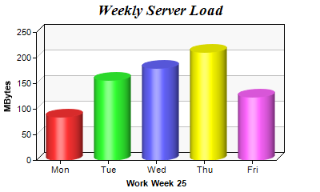

This example demonstrates bars of cylinder shape.
ChartDirector supports bars in cylindrical or arbitrary polygonal shapes. The shape are specified using
BarLayer.setBarShape or
BarLayer.setBarShape2. In this example, the cylindrical shape is illustrated.
See
Shape Specification on how built-in and custom shapes are defined in ChartDirector.
The following is the command line version of the code in "cppdemo/cylinderbar". The MFC version of the code is in "mfcdemo/mfcdemo". The Qt Widgets version of the code is in "qtdemo/qtdemo". The QML/Qt Quick version of the code is in "qmldemo/qmldemo".
#include "chartdir.h"
int main(int argc, char *argv[])
{
// The data for the bar chart
double data[] = {85, 156, 179.5, 211, 123};
const int data_size = (int)(sizeof(data)/sizeof(*data));
// The labels for the bar chart
const char* labels[] = {"Mon", "Tue", "Wed", "Thu", "Fri"};
const int labels_size = (int)(sizeof(labels)/sizeof(*labels));
// Create a XYChart object of size 400 x 240 pixels.
XYChart* c = new XYChart(400, 240);
// Add a title to the chart using 14pt Times Bold Italic font
c->addTitle("Weekly Server Load", "Times New Roman Bold Italic", 14);
// Set the plotarea at (45, 40) and of 300 x 160 pixels in size. Use alternating light grey
// (f8f8f8) / white (ffffff) background.
c->setPlotArea(45, 40, 300, 160, 0xf8f8f8, 0xffffff);
// Add a multi-color bar chart layer
BarLayer* layer = c->addBarLayer(DoubleArray(data, data_size), IntArray(0, 0));
// Set layer to 3D with 10 pixels 3D depth
layer->set3D(10);
// Set bar shape to circular (cylinder)
layer->setBarShape(Chart::CircleShape);
// Set the labels on the x axis.
c->xAxis()->setLabels(StringArray(labels, labels_size));
// Add a title to the y axis
c->yAxis()->setTitle("MBytes");
// Add a title to the x axis
c->xAxis()->setTitle("Work Week 25");
// Output the chart
c->makeChart("cylinderbar.png");
//free up resources
delete c;
return 0;
}
© 2023 Advanced Software Engineering Limited. All rights reserved.